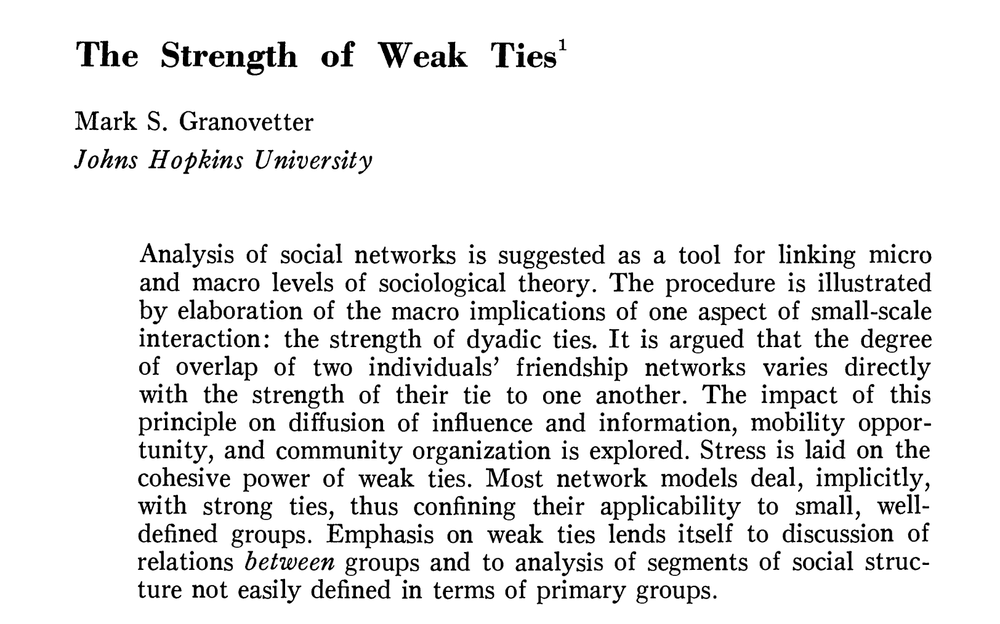

L6. 진화의 수수께끼
인간 집단의 진화와 스타트업 팀
아이디어 마켓 후기
- 각자의 개성있는 생각들을 들을 수 있었던 시간
- 설문조사의 유혹과 함정
- 장표의 공간이 아닌 실제 비즈니스의 공간을 탐색해야함.
- 팀을 구성하기 위해 각자의 방식으로 어필을 했다고 생각함.
- 팀이 어떻게 형성되고 어떤 아이디어들이 살아남을지 그 과정이 궁금함.
- 오늘 수업은 팀(집단, 무리 등)의 진화에 대해 알아볼 예정
수업 목표
- 인간 집단이 가능하기 위한 진화적 조건들에 대해 학습한다.
- 인간 집단이 진화한 과정에 대해 고찰한다.
- 인간 집단의 진화와 스타트업 팀의 관계에 대해 알아본다.

인간 집단이 가능하기 위한 조건들
이타성
- 이타성의 정의
- 나의 비용을 들여 타인에게 도움되는 행동을 하는 것
- 집단을 가능하게 하기 위해서는 타개체를 돕는 행위가 반드시 필요하다.
진화적 이타주의와 심리학적 이타주의
Sober, Wilson 은 <타인에게로>에서 ’진화적 이타주의’와 ’심리학적 이타주의’를 구분하였다.
진화적 이타주의와 심리학적 이타주의의 구분
| 구분 | 진화적 이기주의 | 진화적 이타주의 |
|---|---|---|
| 심리학적 에고이즘 | 1. S는 최대한 많은 식량을 확보하고 싶어한다. | 3. S는 요새를 세우는 데 도움을 주고 싶어한다. |
| 심리학적 이타주의 | 4. S는 자녀의 안녕에 관심을 가진다. | 2. S는 집단 구성원들의 안녕에 관심을 가진다. |
꿀벌, 개미 등 진사회성 동물의 생식 분업

미어캣의 알람콜

나에게 손해가 되는 행동이 어떻게 진화했을까?
- 진화생물학에서 이타성
- 꿀벌, 개미 등 진사회성 동물의 생식 분업
- 미어캣, 땅다람쥐의 알람콜
친족선택론(Kin selection), 피는 물보다 진하다.
해밀턴 규칙(Hamilton’s rule) \[rB > C\]
이타적 행동에 드는 비용보다 도움을 받는 개체와의 근연도와 개체가 받는 도움의 곱보다 크면 이타적 행동이 살아남을 수 있음.
해밀턴 규칙
참고자료 : [Link]
친족선택론(Kin selection) - 피는 물보다 진하다.
나는 내 형제 한명 물에 빠진다면 내 목숨을 내놓고 물에 뛰어들지 않겠지만 형제 두명이나 사촌 8명이라면 그렇게 할 것이다. - J.B.S 홀데인
J.B.S 홀데인
참고자료 : [Link]
흡혈박쥐의 피 나누기

평판과 이타주의

비친족간에 일어나는 이타주의
- 호혜적 이타주의(reciprocal altruism)
- 간접적 호혜주의(indirect reciprocity)
호혜적 이타주의
- 로버트 엑셀로드, “협력의 진화”
- 죄수의 딜레마와 팃포탯(Tit-for-tat)
Tip
이코노미 게임의 종류와 효용성 - 죄수의 딜레마, 협력 게임, 독재자 게임, 최후통첩게임, 제3자처벌게임, 공공재게임 등
죄수의 딜레마

간접적 호혜주의
- 좋은 평판을 쌓으면 제 3자를 통해서 이익이 돌아옴

평판의 힘
- 최후통첩 게임(Ultimatum game)


참고자료 : [Link]
처벌의 힘

참고자료 : [Link]
이코노미 게임 직접 해보기
반복되지 않는 상황에서의 이타주의 - 강한 호혜성
- 집단선택론(Group selection)
- Big mistake 가설, 비혈현에까지 광범위하게 발현되는 이타성은 혈연 집단끼리 모여 살던 사회에서의 적응이 큰 사회에서까지 발현되는 일종의 ’실수’와 같은 것
- 과시가설(값비싼 신호 가설)
- 집단의 압력(원거리 무기의 출현)
강한 호혜성
- 사람들은 one-shot 게임에서도 기꺼이 익명의 남을 도와주는 경향이 있음.
- 일면식도 없는 타인을 위한 기부
- 강한 호혜성은 호혜적 이타주의와 간접적 호혜주의를 넘어서는 개념
- 강한 호혜성은 협력적이고 집단의 규율을 따르는 타인에 대해 보상을 주고(이타적 보상) 아닌 자에게 처벌을 내리는 행동(이타적 처벌)을 포함한다.
집단선택론, 문화집단선택론
- 집단선택이 있다면 가능함.

참고자료 : [Link]
과시 가설(값비싼 신호 가설)
- 남성 사냥꾼의 역할이 단지 영양 공급(provisioning)에만 있지 않다는 가설
- 누가 뛰어난 사냥꾼인지 쉽게 구분할 수 있음.
- 뛰어난 사냥꾼은 사냥감을 부족원들과 관대하게 나누어 갖고 이성으로부터의 인기 등 번식적 이득을 얻는다.
집단의 압력
- 알파메일을 제압하기 위해서는 서열이 낮은 3마리가 달려들어야 함. 제압한다하더라도 심각한 타격은 불가피함.
- 난 한놈만 팬다(?)의 위협이 먹힘.
- 그러나 원거리 무기의 발전으로 피해를 입지 않고 서열이 높은 개체를 무너뜨릴 수 있음.
- 아무리 신체적 능력이 뛰어나더라도 협업하지 않고 막무가내로 나갈 수 없음.
원거리 무기의 힘

인간이 협력할 수 있게 된 이유

인간은 왜 이렇게 폭력적인가?
침팬지가 총쏘는 법을 알았다면 바로 3차 세계대전이 일어날 것이라고 제인구달 선생님 답변하셨는데, 침팬지가 총을 쏠줄 알았다면 침팬지도 조금 온순해지지 않았을까?
이타성에 대한 정리

참고자료 : [Link]
조별과제가 어려운 이유
조별과제가 어려운 이유
- 인간이 강한호혜성을 진화시킨 동물이지만 무임승차자를 완전히 제거할 수는 없었음.
- 많은 사람들이 협력적인 사회일수록 무임승차의 유혹은 더욱 커진다.
위선자의 순기능?
그리고 권력과 위선자의 존재가 집단의 전체적 협력을 안정적으로 유지하는데 역할을 한다는 연구도 있음.
위선자의 순기능
위계의 탄생, 스티렐니
- 평등사회를 이룩했다가 인간은 왜 다시 불평등사회로 돌아갔을까?
- 홀로세를 우리가 깨달은 것보다 더 이상한 세상이라고 묘사하였음.
- 농사는 강제된 노역, 사냥은 숙련된 기술을 갖춘 노동
- 여성 간에도 이러한 불평등이 홀로세부터 나타남, allomothering
도덕적 동기
- 벌금(처벌)이 효과적이지 않은 이유
개인적 자아와 집단적 자아

참고자료 : [Link]
개인적 자아와 집단적 자아

참고자료 : [Link]
개인적 자아와 집단적 자아
- 집단 선택의 힘이 강한 지역에서 집단적 자아가 많이 나타남
- 스타트업에서는 두 가지 자아를 잘 활용해야 한다.
- 개인적 자아와 집단적 자아가 추구하는 가치를 잘 align 시키는 것이 가장 중요하다.(창업자가 해야할 일)

인간 집단의 진화사
⟪인간 무리⟫, 마크 모펫

- 하버드대학에서 에드워드 윌슨의 지도로 박사학위를 받음
- 인간과 동물 사회의 진화, 개미의 사회적 행동 등을 연구

집단의 관점에서 본 진화사
- 특정 사회적 곤충과 현대 인류의 유사점 : 개체수가 많다는 점
- 동물 행동을 연구하는 과학자들은 협소하게 종간의 진화적 관계에만 초점을 맞추는 경우가 많았다.
- 사회의 특성 중에는 진화적 계보보다 규모, 개체 수와 관련이 있는 것이 많음.
- 사람과 개미는 똑같은 일반적 문제에 서로 다른 해법에 도달함.
개미 사회의 새끼 치기
- 개미 군집의 정체성은 처음에 어떻게 자리잡는가?
- 개시용 둥지(starter nest)를 파고 첫번째 일개미 들이 사회의 원동력이 된다.
- 이때 독립적인 냄새와 정체성을 만들어내게 된다.
- 개체수 확장되다 일정 규모에 도달하면 또다른 사회를 탄생시키기 위해 떠나는 여왕개미와 수컷개미들이 생김
- 원래의 여왕개미가 있는 군집도 계속해서 살아남고 이 기간이 아주 길어질 수도 있다.
- 초군집의 개체수가 끊임없이 증가하다보면 비어있던 구석구석이 남김없이 모두 채워지게 된다.
- 초군집에 걸쳐 똑같은 냄새가 만들어지는 한 사회는 탈없이 유지된다.
인간의 얼굴 인식 능력
- 우리 편이 아닌 자들을 구별해내기 위한 기능
우리 편과 그들을 알아보는 능력
- 우리 편을 나타내주는 표지들
- 음식, 옷, 문양, 장신구, 문신, 몸짓, 사투리 등
- “어린 시절에 먹던 음식을 사랑하는 것이 애국심이 아니면 무엇이겠는가?” - 중국속담
- 집단에 대한 헌신을 나타내는 표지들임.
- 다른 집단에서는 정상적으로 살 수 없을만한 되돌릴 수 없는 헌신 장치들을 갖춘 집단 구성원들로 이뤄진 집단은 강력하다.(예를 들어 조폭의 문신)
언어는 우리의 소통을 막기 위해 존재한다.
- 성경의 바벨탑 이야기에서 신은 사람들이 힘을 합쳐 하늘에 닿을 만큼 높은 탑을 쌓지 못하게 하려고 그들에게 다른 언어를 준다고 나와있음.
(길르앗 병사가) 그에게 이르기를 “’쉽볼렛shibboleth’이라 발음하라.”하여 에브라임 사람이 그렇게 바로 말하지 못하고 ’십볼렛sibboleth’이라 발음하면 길르앗 사람이 곧 그를 잡아서 요단강 나루턱에서 죽였더라. 그때에 에브라임 사람의 죽은 자가 4만 2천 명이었더라.
온라인 상에서 Social Network의 양극화

익명 사회
- 개미는 집단 내 타 개체를 ‘아무도’ 모르고, 침팬지는 ’모두’를 알고 인간은 ’몇몇’만 안다.
- 온오프라인 공간에서 내부인과 외부인을 가르는 표지는 큰 역할을 하고 있음.
- 온라인 공간의 표지는 오히려 제한될 수 밖에 없어서 양극화가 더 강하게 일어나는 것일 수도 있음.
한정된 인지자원으로 이렇게 큰 사회를 만들수 있었던 이유
던바의 수(150명)
실질적인 사회적 관계의 최대 수(인지적, 물리적 자원의 한계)
개미 둥지에 개미가 추가되는 것처럼 한 국가에 국민이 더 늘어나도 뇌에 추가적인 부담이 가해지지 않는다.
- 마치 자료구조에서 노드가 추가되고 삭제되는 것처럼 매우 단순한 일이었을 것.
정체성 표지들을 사용함으로써 낯선 이도 우리 구성원 중 한 사람이라 생각할 수 있는 재능을 지녔다.
이러한 과정은 농사를 짓기 전부터 유효했을 것(연속성 강조)
weak tie의 역할
- 약한 연결의 힘

Strong tie와 Weak tie

집단 구조의 체질 변화
- 계통 발생학적(침팬지와의 공통조상으로부터 이어지는 계보상)으로는 집단의 네트워크 구조가 성긴 형태로 변화 가능한 상태로 이행했다고 추측할 수 있음.
- 성긴 구조는 정체성 표지가 있기에 가능했을 것
침팬지 - 인간 - 개미
- 집단에 대한 다윈 공간적 접근
집단에 대한 부유하는 이치를 잡다.
- 부유하는 이치(Dennett)
- 기능의 궁극인에 대한 표상을 갖지 못함에도 그 기능을 완벽하게 수행하고 있는 것.
- 침팬지와 개미는 ’집단’과 그 ’설계’에 대해 알지 못하더라도 집단을 잘 유지하고 있다.
- 인간 집단은 설계자가 필요한가? 설계자 없이도 존재할 수 있는가?
’집단’이라는 생각도구
’집단’이라는 생각도구는 리더에 의해서 다양한 형태로 쓰일 수 있음.
리더 없는 집단의 변동성
- 집단 지성, 집단 광기(사이버 렉카)
집단의 관점에서 본 인간 진화사
- 매직넘버 500 : 선사시대 호모사피엔스가 안정된 사회를 유지할 수 있었던 인구수의 대략적 상한치
- 밴드 사회의 인구수 상한선이 낮았던 것은 인간의 개성 표현을 관장하는 심리학의 함수
- 같은 공동체라는 느낌을 공유할 수 있을 정도로 서로 충분히 닮았다고 느끼는 한편, 자신을 독특한 존재라고 여길만큼 충분히 달라야함.
- 다양한 사회적 집단과 이어질 기회에 대한 욕망이 500은 넘어야 생길 것.
- 선사시대에는 분할로 귀결.
집단의 생애사
- 모든 사회는 종말을 맞이한다.
- 모사회와 딸사회의 관계
- 계속해서 모사회로부터 딸사회가 생성되는 구조에서 딸 사회들이 빽빽하게 밀집되어 사회적 마찰로 인해 사회 분할을 피할 수 없는 경우, 더 취약한 쪽이 해를 입을 것이 확실하다.

인간 집단의 진화와 스타트업 팀
초기의 스타트업, 소규모 팀, 침팬지 사회
- 초기의 스타트업 및 소규모 팀은 모두가 무슨 일을 하는지 알고 서로에 대해서 아는 강한 연결 관계
- 이 단계에서 필요한 것들
Radical Candor
개인적 관심
- 개인적 관심은 상대의 개인적인 정보를 묻고 알고자 하는 것이 아님
- 개인적 관심은 이타적 동기에서부터 시작하는 것
- 개인적 관심을 통해 신뢰가 형성되면 솔직함을 다룰 수 있는 관계로 나아가야 함.
진실이 막히는 순간
Asch, 1955
확증 편향
- 자신이 가지고 있는 기존 믿음이나 가설과 부합하는 정보만을 찾고, 그렇기 않으면 그에 맞게 정보를 해석하려는 심리적 경향을 말한다. 인지편향의 한 유형으로 대표적인 귀납 추론의 오류 중 하나이다.
침묵의 나선
Noelle-Neumann, 1993 : [Link]
동조와 확증편향을 막기 위한 방법

Lee E-J et al, 2017 : [Link]
12명의 성난 사람들

동조와 확증편향을 막기 위한 방법
- 의문은 덮어두지 말 것, 진실 부채를 쌓지 말라.
- 덮어두면 부패한다.
- 합리적이고 양적인 근거를 가지고 끊임없이 설득해야함.
신속성
- 좋은 팀 안에서는 이타적인 의도를 가지고 진실된 정보들이 유통된다.
- 여기에 한 가지가 더 필요하다.
- 정보가 빠르게 돌아야 경쟁력 있는 팀이 될 수 있다.
Loading

즉각적인 반응과 팀 본딩과정

협력의 매개로서 도파민
참고자료 : [Link]
즉각적인 고객 대응의 필요성
- “고객이 00분째 기다리고 있습니다.”(채널톡 사례)
- 더 좋은 사용자 경험을 만들기 위해서 고객에 대한 즉각적인 대응은 필수적임
- 그만큼 내부 팀원들과의 반응도 즉각적으로
신속한 커뮤니케이션이 필요한 순간

Agile manifesto
스타트업 방법론들
- 린 스타트업, 애자일, 스크럼 등 방법론을 적용하는가가 중요하지 않다.
- 결국은 팀내에서 즉각적으로 사회적 상호작용에 의한 보상과 프로덕트에 의한 보상, 그리고 고객과의 상호작용에 의한 보상의 주기를 짧게 가져가는 것이 스타트업 방법론의 핵심!
- 구성원이 이타적인 의도를 가지고 진실된 정보를 신속하게 나누고 있는가를 각각의 기준에 의해 판단하면 됨.
- 구성원들의 경험까지 세분화하고 관리하는 것이 필요.
Hebbian rule

요약
- 이타적 동기(개인적 관심)
- 진실성, 정확성
- 신속성
중규모 스타트업 및 팀, 인간 무리
- 역할 분담
- 개인적 관심보다 문화만들기에 힘써야 함.
- 무임승차자 관리 체계
- 중간 정도의 익명사회
대규모 기업, 개미 사회
이전 단계의 조직들을 모두 포함하면서도 체계적으로 움직일 수 있어야 함.

강의 요약
강의 요약
- 완전히 이론적이지도, 완전히 실천적(규정적)이지도 않은 수업 내용
- 인간 집단의 특성과 진화과정을 통해 보았을때 ‘팀’과 ’집단’ 개념이 매우 중요한 것을 알 수 있다.
- 그러한 지식으로부터 팀활동에 필요한 실천적 지식이 어떤 것이 있는지 나름 고민해보자.
- 앞선 강의 내용들이 더욱 중요해진 시점
- 팀과 집단이 인간관계에 대한 것만은 아님.
- 같이 일하기 위해서 어떤 부분을 신경써야 하는지 고민해야함.
팀빌딩 규칙
- 기한 : 3/31(금) 자정까지(조원 중 한명이 제출)
- 인원제한 : 2~5명(5명을 초과하는 경우 따로 연락바람)


인간 본성의 과학적 이해